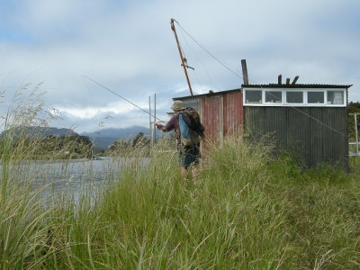
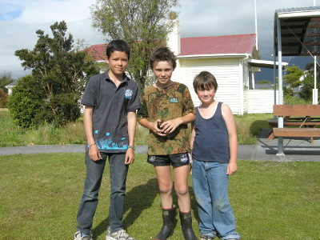
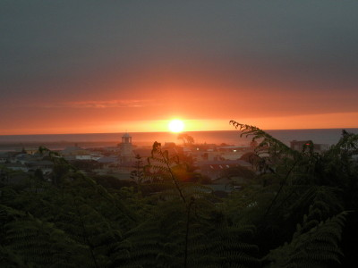

釣行日誌 ＮＺ編 「翡翠、黄金、そして銀塊」
ヒッチハイク
2010/12/01(WED)-3
砂浜が終わり、岸辺に草むらが続くようになったあたりに、ホワイトベイト漁師の小屋があった。もう今の時期は漁期を過ぎているので人の気配は無い。強風に手こずりながらもブリントさんは可能性のあるポイントをしらみつぶしに攻めてゆく。

左岸側を漁師小屋の上流100mほど進むと、岸辺のブッシュがひどくなり遡行が難しくなってきたので、釣りをやめて車に引き返すことにした。時刻は午後２時過ぎ。再びサンドトレッキングを30分続けるのだ。砂浜歩きはけっこう足腰にコタエルので、僕は手頃な流木を２本拾い上げ、トレッキングポールの代わりに両手に持った。
タスマン海の波音を聞きながら、白い雲、黒い砂、青い空、緑の森、翡翠色の海水面などを横目でチラチラ眺めつつ、黙々と歩く。ストライドの大きなブリントさんの早足に付いて行くには、のんびりと風景を眺める余裕は無く、ひたすら懸命に歩かなければならない。流木の杖を右と左に交互に突きつつ、両手両足を休み無く動かし続けた。
遙か遠くに見えていた入り江の建物が、少しずつ近づいて来た。もう少し頑張ろう！ 自分に言い聞かせて歩みを進める。原生林の藪こぎと思えばずいぶん楽だが、砂に足をとられてあと一歩が重い。
ふと、先を進んでいたブリントさんが足を止めて振り返り、
「タケシ！ クリスマスには携帯型のＧＰＳをプレゼントしようか！」
と出し抜けにおかしな話題を振ってきた。僕が怪訝そうな顔をしていると、彼はニッコリ笑って延々と続くブッシュの１点を指さした。
「ここが帰り道だぞ」
そう言われてみると、確かに小径へと続くような、わずかな空間がブッシュの中に見えた。僕が目印として覚えておいた切り株は全然見あたらなかった。（笑） これではとても一人で釣りに来ることはできないな、と、老練なフィッシングガイドであるブリントさんの経験に深く感心させられた。
「いやァ！ 全然分かりませんでしたよ！」
照れ笑いで誤魔化し、やっとここまで来たか！と安堵して小径へ踏み込む。帰り道は意外と早く車道に出た。交通量は少ないが、たまに通る車は時速100km以上で飛ばしていくので路肩を歩くには注意が必要である。早足のブリントさんに遅れないよう、懸命に歩いていると、また彼が振り向いて大声を出した。
「お～い！ＵＦＯを発見したぞ！ 銀色の円盤が着陸している！」
ええっ！と驚きつつ近づいてみると、道路脇の窪地に鈍い銀色の円盤が見えた。だがそれは直径50cmほどの、乗用車から外れてうち捨てられたホイールキャップなのであった。
「ハハ！ 確かにＵＦＯですね！ 乗ってきたのはきっと小人の宇宙人でしょうね」
どんな時にもユーモアを忘れず、「 Every time be positive! 常にポジティブであれ」という釣りの心構えを僕に教えてくれたブリントさんの人柄には、本当に心がポカポカと暖められた。
ようやく車にたどり着き、再び６号線を北上するドライブが始まった。カーステレオから流れてくる山下達郎のオールディズが心地よい。
しばらく走り、ちょっとした集落のはずれにある空き地に車を停めたブリントさんは、少し仮眠を取ると言ってシートを倒した。200mほど戻った所には公園があり、トイレもあるとのことなので、散歩がてら行って見ることにした。
それほど広くはないが、スベリ台やブランコ、ベンチなどが整備されたポケットパークの横にはきれいなトイレがあった。一息ついて出てくると、ちょうど地元の男の子三人組が現れた。あまり東洋人を見たことが無いのか、興味深そうにこちらを見ている。小学校の高学年くらいだろうか？ 声をかけると、愛想良く返事をしてくれて、しばらく歓談した。とても素朴なウェストランドの子供達だった。短パンの男の子が履いている黒いゴム長靴が、いかにもキウイ（ニュージーランド人の愛称）の子供らしくて微笑ましかった。

それじゃぁサヨナラと、彼らに挨拶をして、車に戻ろうと歩き始める。しばらく行くと、後ろから来た一台の車が僕の横で停まった。
「ヘイ！ ヒッチハイクか？！ NAGOYAまでなら乗せてくぞ！」
運転席のブリントさんが、笑いながら助手席のドアを開けてくれた。
公園からは３時間ほどのドライブでホキティカに着いた。奥さんのグレースさんは、僕たちが釣行に出るのに合わせて、次男のランス君一家が住むネルソンに行っているので、ブリントさんと二人で夕食となった。レンジで温めたミンスが美味しい。食堂の窓から、植え込みのシダ越しに、タスマン海に沈む夕日がとても綺麗に見えた。

実に感動的な体験をした、辺境の地への三泊四日の釣行が終わった。
釣行日誌ＮＺ編 目次へ
サイトマップ
ホームへ
お問い合わせ